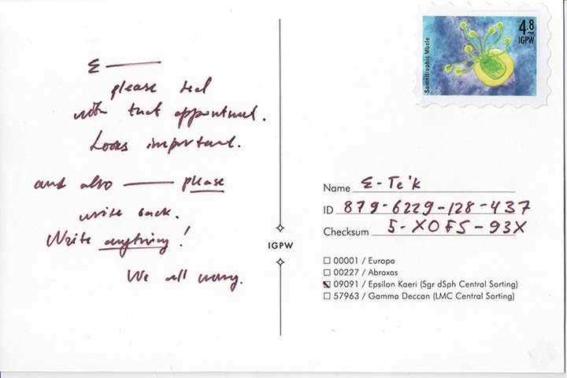
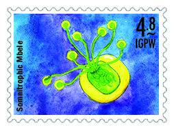
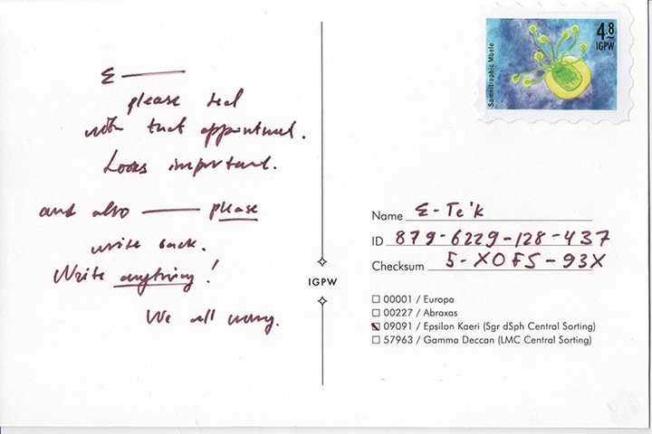
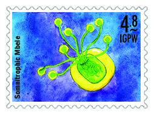

T
he fourth lost mail postcard, sent out in June, 2018, was made public in January, 2019.
Read more about the project and find the full lost mail directory...
 



89x.fBh-51 (by v3 of the Dehhan Calendar)
Dear Wrh. Dr. TtO. Ete“k, Lr.S.,
Delighted greetings from Neupfon Daughters Orchards!
Yes! Your best friend is already waiting for you in our happy facility over at Dehho-4B
Your appointment time: 89x.fBh-97
Your checksum and queue number, which you will need to enter the facilty:
XQFS-5-93X / 2592
Your case worker is Siwe Abpadti, Lr.S.. Please ask for them when you arrive. Case worker notes:
Please honor this appointment. The specimen is behaving very poorly and already it was a challenge to keep him around long enough for you to potentially grace us with your visit again. It is unable to participate in matches, and it is becoming increasingly uncooperative with its roommates! You will have to pay for all the damages incurred. I thought you were sincere in wanting to adopt, but clearly you are not, because you know we cannot justify maintaining this specimen much longer, yet you insist on ignoring our letters after your very convincing show several demi-moons ago. You must send in the appropriate forms, as discussed until the end of the Dehhan year, by v3 of the Dehhan Calendar, or the specimen will have to be redistributed.
May luck guide you kindly,
Sincerely,
Neupfon Daughters Orchards
Family-run since 14z.nO
Represented by
Siwe Abpadti, Lr.S.
In addition to the above appointment reminder, the postcard author attached this page:

Lastly, another explanatory letter from the Lost Mail Curator:
Warmest salutations from the esteemed council!
Sincerely we delight in offering you the second redistributed Lost Mail item, curated by Edo Gomuk. They have enclosed a package which has been unsuccessfully routed to the intended recipient. As the prior selections, this is also a fascinating bit of our history. Shortly after re-settlement, no one expected travel to ever again be as easy and accessible as it had once been. The trains, boats, planes, and cars of the late Terran existence, before its inhabitants became unsettled, were, at best, romantic fairytales.
Especially in places like the Dweller planet, which I have already described to you, the idea of travel was not one of leisure or enjoyment. More than that, traveling – or doing anything – for leisure rather than out of necessity in that settlement was seen as inappropriate, selfish waste of limited resources.
The general idea of "only when necessary" had arisen, more or less independently, in most settlements with very few exceptions. People can have different ideas about necessity, however. So when travel between the settlements became possible, it was used for every imaginable "necessity."
Mailing, addressing, and calendar systems were ad-hoc and unprepared for intergalactic standardiaation. A practice arose of linked address lists: the traveler who wished to receive mail would notify her previous host of her current location, so any mail could be forwarded step by step. This is both inefficient and has a higher misdelivery rate than other mail. Some have hypothesiaed that resentment of this wasteful practice has caused some delivery and sorting staff to purposely misplace such packages. This conspiracy theory is a fascinating cultural phenomenon, but I assure the esteemed Patron that the outstanding morals of each I.G.P.W. Colleague would never permit this sort of action in practice.
We hope you enjoy this curated selection.
Sincerely,
May your days be long, splendid, and many,
IGPW Council, represented by
Edo Gomuk
(Lost Mail Redistribution Program)
Brought to you by Kit Kuksenok (Narrative and Illustration), Cora Lee (Graphic Design and Lost Mail Art Direction), and Victoria Downing (May-Jun Stamp Design). Read more about the project and find the full lost mail directory...
{kind=link}
{kind=link}